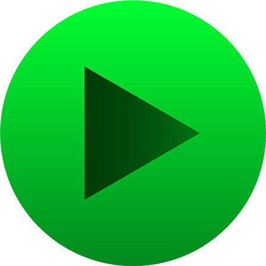
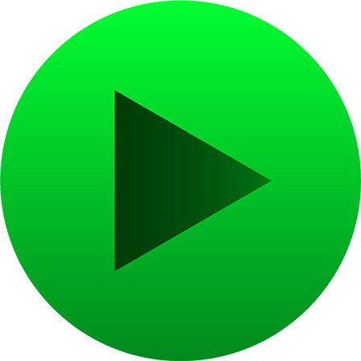
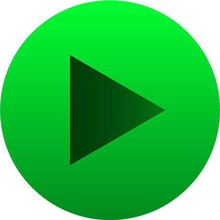
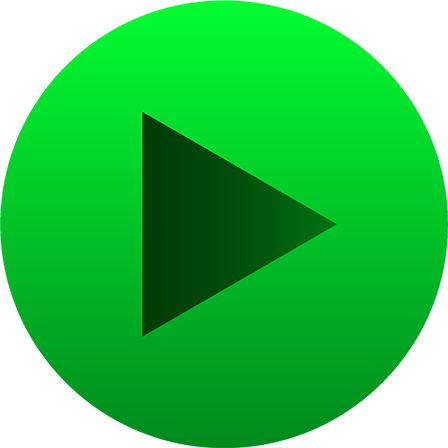

A ?Tenori-on? is a dope electronic music instrument sequencer thingie that Yamaha made for a hot minute. I love pixels and patterns and generating things out of pixels and patterns, which means I LOVE the Tenori-on. Since they're rare and mad expensive, I've never seen one, so I made a JavaScript version of what I think it looks like.
You can change between drums or a synth sound (also using the D or S keys). The URL also holds the state, so you can send it to a pal to have them listen to your masterpiece. If you hit a bug, refreshing usually makes it go away.
The Improvise button will auto generate drums to match your synth using ~*machine learning*~ via Magenta.js and a recurrent neural network. In the browser!!
Ok, go make fun shit now and tell me about it!
(?? thanks to Zach, Surma and Mariko for providing a sample!)